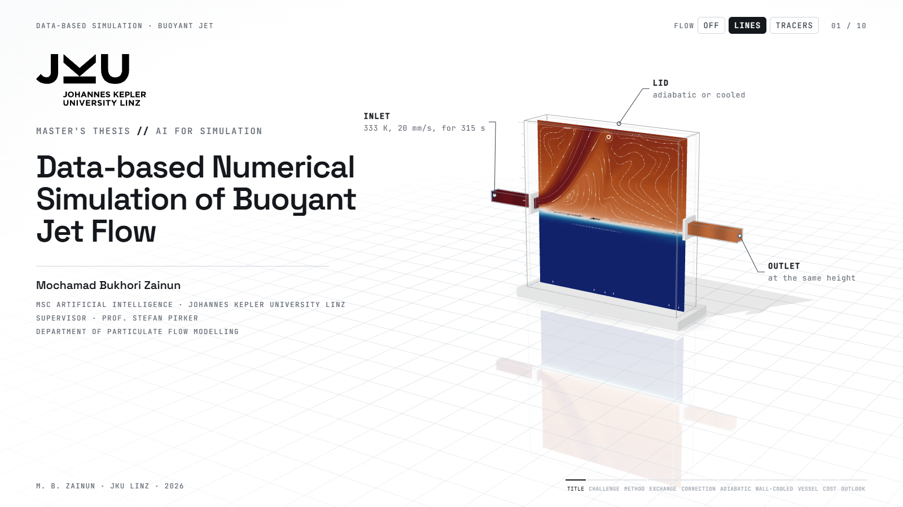
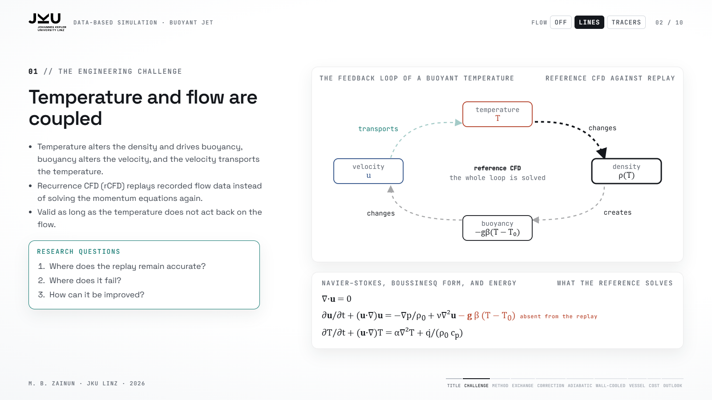
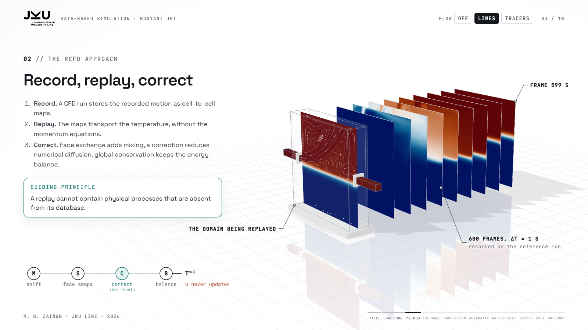
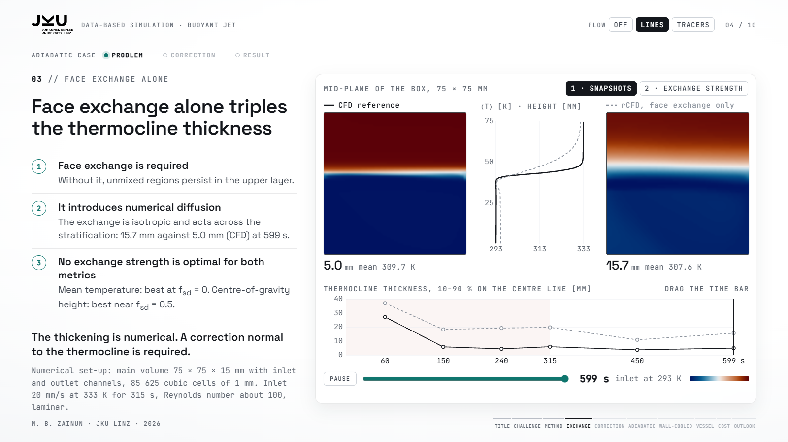
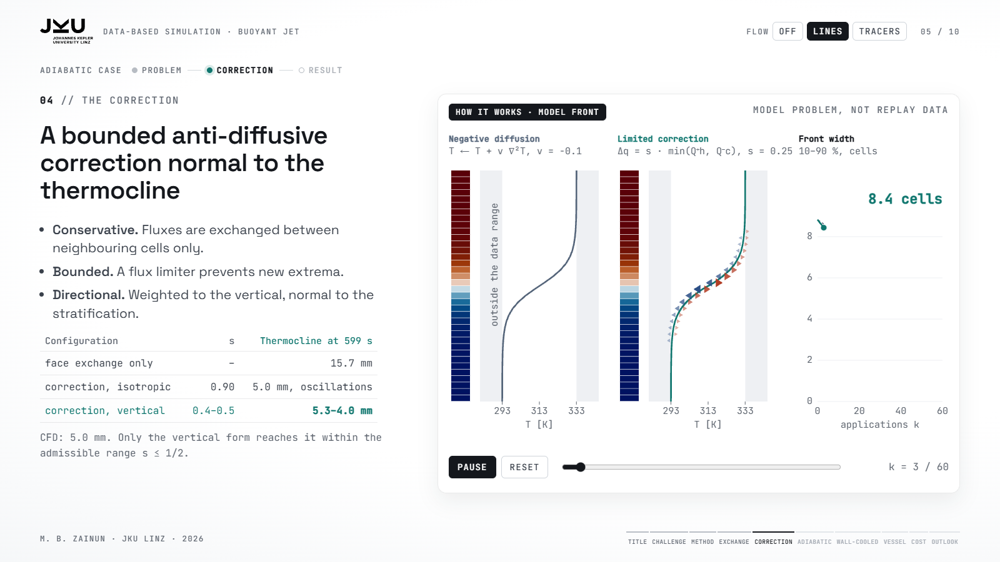
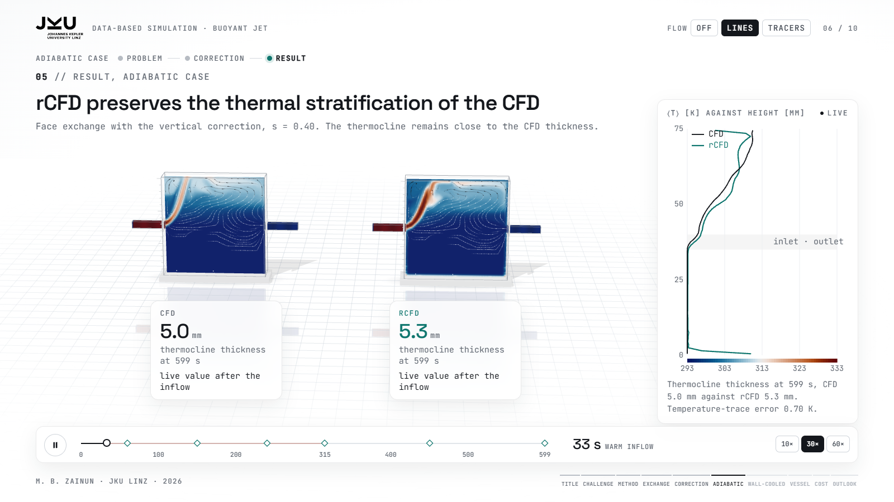
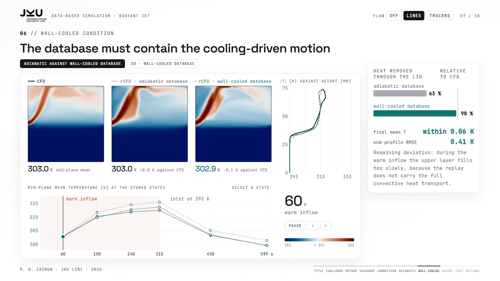
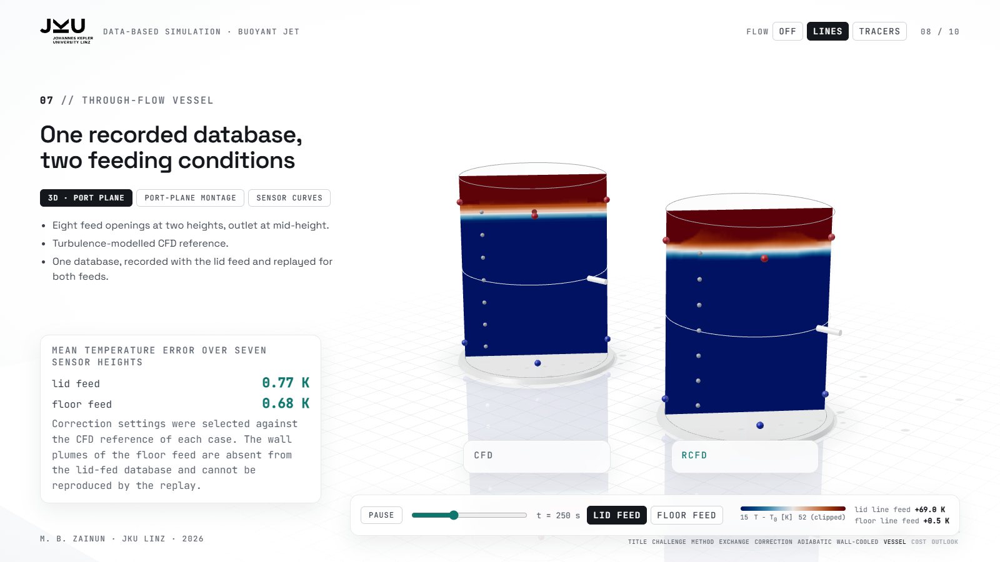
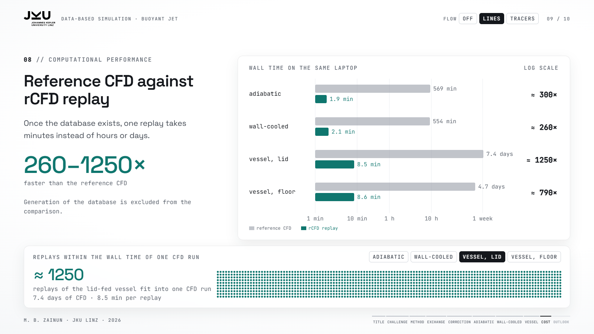
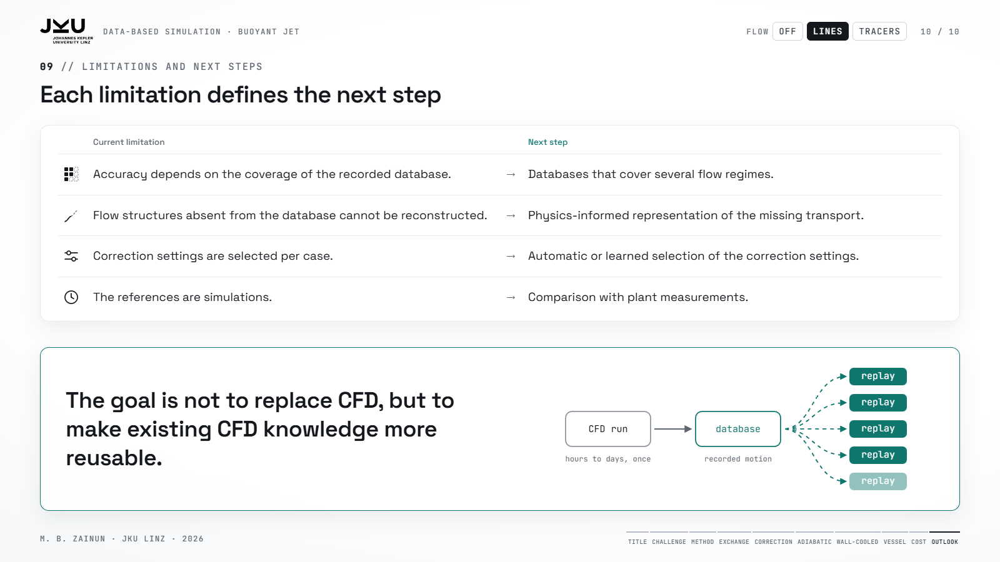

Industry-style defense talk
open the deck · 2173 words
Whole talk
Slide 1 · Data-based Numerical Simulation of Buoyant Jet Flow0:47

Thank you for the opportunity to present my work. I conducted this research under the supervision of Professor Stefan Pirker. My thesis is titled Data-based Numerical Simulation of Buoyant Jet Flow. The main idea is simple. We record a flow once, and then reuse its recorded motion to simulate how temperature is transported. The picture shows the configuration studied in this work. A warm jet enters a colder fluid and forms a warm layer near the top. The inlet and outlet are at the same height, and the lid is either adiabatic or cooled. But there is an important challenge. Temperature changes the density of the fluid, and this can also change the flow itself. Let me explain why this is a problem.
Slide 2 · The engineering challenge1:20

In conventional CFD, temperature and velocity affect each other. The loop on the slide shows how this happens. First, temperature changes the fluid density. This creates buoyancy, which changes the velocity. The new velocity then transports the temperature again. So, temperature and velocity are connected in a feedback loop. The reference CFD solves this entire process, which makes it computationally expensive. To make the simulation faster, we can use Recurrence CFD, or rCFD. Instead of solving the flow again, rCFD replays previously recorded motion to transport the temperature. However, the buoyancy term is absent during replay. This means the feedback between temperature and velocity is no longer updated. This works when temperature has little effect on the flow. But when temperature changes the flow significantly, the recorded motion may no longer represent the actual flow. Therefore, my work focuses on three questions. First, where the replay remains accurate. Second, where it fails. And third, how it can be improved. To answer these questions, let me first explain how the method works.
Slide 3 · The rCFD approach1:31

Let me briefly explain the method. It has three main steps: record, replay, and correct. First, we record the flow. A CFD simulation stores its motion as cell-to-cell maps, frame by frame. The stack of frames on the slide illustrates this. Next, we replay the recorded motion. These maps transport temperature from one cell to another, without solving the momentum equations again. However, the recorded maps do not fully represent the mixing between neighbouring cells. Therefore, rCFD adds face exchange to account for this mixing. But face exchange also introduces numerical diffusion, which can spread the temperature profile too much. This is where my contribution comes in: the correction step. It reduces the numerical diffusion introduced by face exchange. Finally, a global balance ensures that energy is conserved. In the diagram, the step marked C represents this correction. This is the additional step introduced in my thesis. Now, look at the guiding principle in the box. A replay cannot contain physical processes that are absent from its database. During replay, the velocity is not updated. The temperature is simply transported along the recorded motion. I will return to this principle when discussing the results. First, let us see what happens when we use face exchange alone.
Slide 4 · Face exchange alone2:36

Now, let us look at the first case: the adiabatic box. The flow is laminar, and the set-up is shown at the bottom left. First, look at the temperature fields. Red represents warm fluid, and blue represents cold fluid. We compare the reference CFD on the left with the replay using face exchange alone on the right. Both simulations produce a warm layer above the cold fluid. The transition between these layers is called the thermocline. In the reference CFD, the thermocline remains thin and sharp. But in the replay, it becomes much wider. The profiles in the middle show the same difference. The black CFD profile has a sharp transition, while the grey dashed replay profile is much more spread out. The plot below shows how the thermocline thickness changes over time. At the end, it is 5.0 millimetres in the CFD, compared with 15.7 millimetres in the replay. So, the replay produces a thermocline that is about three times thicker. The reason lies in the face exchange. The replay needs face exchange to represent mixing between neighbouring cells. Without it, some regions in the upper layer remain unmixed. However, this exchange is isotropic. It acts in all directions, including across the stable stratification. As a result, it spreads heat across the thermocline and creates excessive numerical diffusion. This spreading is not part of the physical behaviour shown by the reference CFD. It is introduced by the replay method. Now, let us look at the second part of the slide. Here, I varied the exchange strength, f s d. Dark lines represent lower values, while light lines represent higher values. The black dashed line is the reference CFD. The left plot shows the mean temperature, while the right plot shows the height of the centre of gravity of the heat. The important point is that these two quantities favour different exchange strengths. The mean temperature is best reproduced without exchange, while the centre of gravity is better reproduced with a moderate exchange. So, there is no single exchange strength that gives the best result for both quantities. This shows that adjusting face exchange alone cannot solve the problem. We need an additional correction that acts normal to the thermocline. Let me show you how it works.
Slide 5 · The correction1:52

The correction is designed to counter numerical diffusion. It acts normal to the thermocline and follows three rules. First, it is conservative. It only transfers heat between neighbouring cells, so the total energy is preserved. Second, it is bounded. A flux limiter prevents new temperature maxima and minima. Third, it is directional. The correction is weighted towards the vertical direction, across the stratification. The animation illustrates the idea using a model front. This is a model problem, not replay data. On the left, plain negative diffusion makes the front sharper, but it also creates overshoots. You can see the temperature moving outside the grey bands. On the right, the limited correction also sharpens the front, but keeps the temperature within the allowed range. At each step, the correction is limited by the temperature range available from the neighbouring cells. The plot confirms this behaviour. The front becomes narrower with each application of the correction. Now, let us look at the results in the table. It compares the final thermocline thickness. With face exchange alone, the thickness is 15.7 millimetres. The isotropic correction reduces it to the CFD value of 5.0 millimetres. However, this requires a strong correction, and the temperature profile develops oscillations. The vertical correction achieves almost the same thickness with a much gentler setting. So, the important result is that the vertical correction produces a thin thermocline without the oscillations seen with the isotropic correction. This is how I improve the replay. Now, let us see how the correction performs in the full simulation.
Slide 6 · Result, adiabatic case1:27

Now, let us look at the result for the adiabatic case. Here, I combine face exchange with the vertical correction. The animation compares the reference CFD on the left with rCFD on the right. In both cases, the warm jet enters the cold fluid and forms a warm layer near the top. The time bar at the bottom shows the progress of the simulation. The warm inflow stops at the marked time. The plot on the right follows the same timeline. It shows the mean temperature at different heights, with CFD in black and rCFD in green. At the end of the simulation, the two profiles are very close. Both show a sharp transition at the thermocline. The cards show the final thermocline thickness: 5.0 millimetres for CFD and 5.3 millimetres for rCFD. Remember, with face exchange alone, the rCFD thermocline was about three times thicker. With the correction, it is now very close to the CFD result. This means the correction removes most of the excessive numerical diffusion. The temperature-trace error is also shown on the slide. Overall, rCFD maintains the thermal stratification of the reference CFD in this adiabatic case. However, the lid does not exchange heat in this configuration. Next, I change this boundary condition and introduce cooling at the lid.
Slide 7 · Wall-cooled condition1:56

Now, I change the boundary condition to the wall-cooled case. The top wall removes heat from the fluid. The fluid near the wall becomes colder and denser, so it sinks and creates additional motion. First, I reuse the adiabatic database. Look at the three results. The CFD reference is on the left, rCFD with the adiabatic database is in the middle, and rCFD with the wall-cooled database is on the right. With the adiabatic database, the replay remains too warm. The temperature differences are shown below the pictures. The bar on the right shows the same problem quantitatively. The replay removes only about 63 percent of the heat that the CFD removes through the lid. The reason is physical. The adiabatic database never recorded the sinking motion caused by wall cooling. And the correction cannot create motion that is missing from the database. This brings us back to the guiding principle from the method slide. A replay cannot contain physical processes that are absent from its database. Therefore, I recorded a new database under wall-cooled conditions. With this database, rCFD removes about 98 percent of the heat removed by the CFD. The plot below shows the mean temperature across the stored states. The green line, which represents the wall-cooled database, stays close to the CFD reference. However, one error remains. During the warm inflow, the upper layer fills too slowly. The slide names this remaining deviation. It indicates that the replay still does not capture the full convective heat transport. So, the database now represents the cooling-driven motion much better, but the replay is not yet perfect. Now, let us move to a larger case.
Slide 8 · Through-flow vessel1:17

Finally, I tested the method in a larger vessel with through-flow. The vessel has several feed openings and an outlet at mid-height. The reference is a CFD simulation with turbulence modelling. First, I recorded one database using the lid feed. Then, I reused this database for two cases: the lid feed and the floor feed. The 3D view compares the CFD on the left with rCFD on the right. The controls below allow us to switch between the two feed positions. The box on the left shows the temperature error at the sensor heights. For both cases, the error remains below one kelvin. However, two important limitations need to be understood. First, the correction settings were selected using the CFD results for each case. Therefore, this is not a blind prediction. Second, the floor feed creates wall plumes that are not present in the lid-fed database. Since this motion was never recorded, rCFD cannot reproduce these plumes. So, the same guiding principle applies here, even in a turbulent vessel. The replay cannot reproduce physical motion that is missing from its database. Now, let us look at the computational cost.
Slide 9 · Computational performance1:08

Once the database is available, rCFD becomes much faster. The chart compares the computational time on the same laptop. The time is shown on a logarithmic scale. For each case, the grey bar represents the reference CFD, while the green bar represents the rCFD replay. The speed-up ranges from about 260 to 1250 times. The largest gain is for the vessel with the lid feed. The reference CFD takes 7.4 days, while the rCFD replay takes only 8.5 minutes. This means that, in the time needed for one CFD run, we could perform around 1250 replays. The dots at the bottom illustrate this difference. However, there is one important point: the time needed to generate the database is not included in this comparison. So, rCFD does not eliminate the need for CFD. Its advantage is that we can reuse a suitable database for many replays. Finally, let me summarise the main findings of this work.
Slide 10 · Limitations and next steps1:31

To summarise, there are three main findings. First, in the adiabatic jet, rCFD reproduces the thermocline of the reference CFD after applying the correction. Second, under wall cooling, the database must include the motion caused by cooling. Third, in the vessel, one database can be reused for two feed positions, but it cannot reproduce wall plumes that were not recorded. These results show that the accuracy of rCFD depends on how well the database represents the flow. This also defines the next steps. First, I would develop databases that cover several flow regimes. Second, I would investigate physics-informed ways to represent transport that is missing from the recorded flow. Third, I would work towards automatic or learned selection of the correction settings, instead of selecting them separately for each case. Finally, I would validate the method against plant measurements, rather than relying only on numerical simulations. The diagram at the bottom summarises the overall idea. A CFD simulation is performed once to generate the database. This may take hours or days. After that, the database can be reused for many much faster rCFD replays. The goal is not to replace CFD, but to make the knowledge from existing CFD simulations more reusable. Thank you for your attention.